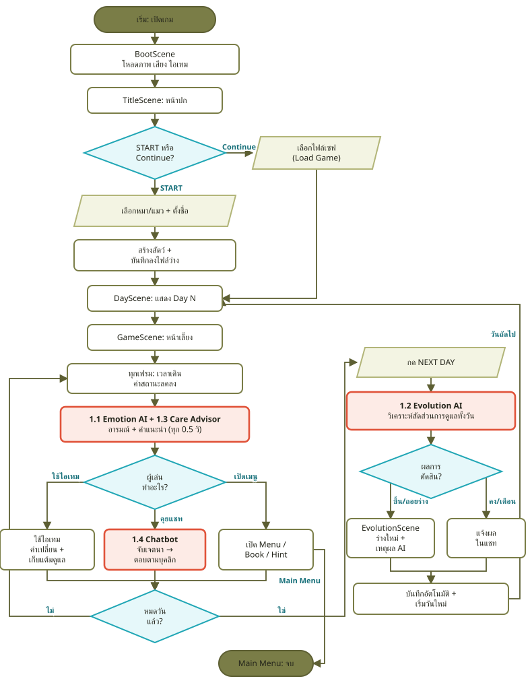

3.10
ผังงาน (Flowchart) การทำงานของโปรแกรมจัดทำด้วย draw.io · ไฟล์ต้นฉบับ: docs/report/3.10-flowchart.drawio
เริ่ม / จบ
การทำงาน
ผู้เล่นป้อนข้อมูล
ตัดสินใจ
ส่วนที่ AI ทำงาน

อธิบายผังงาน
- เปิดเกม → BootScene โหลดภาพ เสียง และไอเทมทั้งหมด → แสดงหน้าปก
- เลือก START เพื่อเลือกหมา/แมวและตั้งชื่อ (เกมบันทึกลงไฟล์ว่างให้อัตโนมัติ) หรือ Continue เพื่อโหลดไฟล์เซฟเดิม
- แสดง Day N แล้วเข้า หน้าเลี้ยง
- ลูปหลัก (ทุกเฟรม): เวลาเดิน ค่าสถานะลดลง และทุก 0.5 วินาที Emotion AI กับ Care Advisor คิดอารมณ์และคำแนะนำ
- ผู้เล่นทำอะไร:
- ใช้ไอเทม → ค่าสถานะเปลี่ยน และเก็บแต้มการดูแลของวัน
- คุยแชท → Chatbot จับเจตนาแล้วตอบตามบุคลิกของร่าง
- เปิดเมนู / หนังสือ / Hint (เลือก Main Menu เพื่อจบเกม)
- หมดวันหรือยัง? ถ้ายัง กลับไปลูปหลัก ถ้าหมดแล้ว ผู้เล่นกด NEXT DAY
- Evolution AI วิเคราะห์สัดส่วนการดูแลทั้งวัน แล้วตัดสินผล:
- ขึ้นร่าง / ถอยร่าง → ฉากวิวัฒนาการพร้อมเหตุผลจาก AI
- คงร่าง / เตือน → แจ้งผลในแชท
- บันทึกอัตโนมัติ แล้วเริ่ม วันถัดไป (กลับไปขั้นที่ 3)
เปิดแก้ไขใน draw.io: เปิด app.diagrams.net (หรือโปรแกรม draw.io) → File → Open from → Device → เลือกไฟล์ 3.10-flowchart.drawio แก้ไขกล่องและเส้นได้ และ Export เป็น PNG / PDF ได้จากเมนู File → Export as